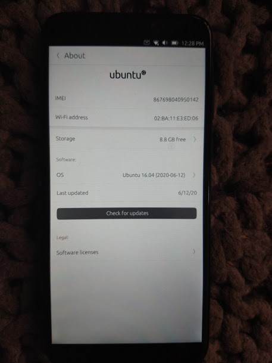
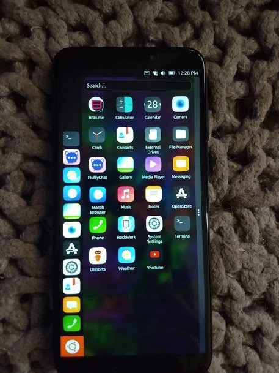

your number one source for linux phone news
Ubuntu Touch is a mobile Linux operating system under development by the good folks at Ubports, who picked up the mobile Ubuntu project after Canonical shuttered their mobile ambitions. Ubuntu Touch will be immediately familiar to anyone familiar with the original standard desktop environment of Ubuntu, Unity8 (which is now called Lomiri by the UBports team).

The mobile distribution has been ported to many different Android devices by way of the Halium project, and it remains at the front of the pack of the most “daily-driver ready” OS for the PinePhone. I run it regularly on my PinePhone, and I have been very happy with its continued improvements.
Ubuntu Touch has a very nice selection of both native and web apps in the dedicated OpenStore, and you can always work on contributing your own application to help the OpenStore grow!
Keep up with some of the latest Ubuntu Touch news right here at FOSSphones and at the Ubports official resources, and make sure you read Ubuntu Touch’s official documentation if you are interested in learning even more about this exceptional Linux phone project.
If you’d like to download the latest Ubuntu Touch image for your PinePhone, click the link below to grab it from Ubport’s GitLab. Alternatively, you can see if Ubuntu Touch is available for the Android device you already own: